阅读词表
| 词条 | 拼音 | 类型 | 说明 |
|---|---|---|---|
| 灰坑 | huī kēng | concept | 遗址中含灰土、废弃物或祭祀遗存的坑穴。 |
| 髳 | máo | manual | 中国古代西南部族名；文中见髳方及《牧誓》盟军。 |
| 殷墟 | yīn xū | site_or_culture | 晚商都邑遗址，甲骨卜辞的重要出土地。 |
| 铜镞 | tóng zú | bronze_item | 青铜箭头。 |
| 妲 | dā | manual | 人名用字；文中见商纣王妃妲己。 |
| 仡仡 | yì yì | manual | 勇猛强健的样子；文中出自《诗经·皇矣》。 |
| 铜戈 | tóng gē | bronze_item | 青铜戈，商周常见兵器。 |
| 人祭 | rén jì | concept | 以人作为祭品的祭祀行为。 |
| 窖穴 | jiào xué | concept | 地下储藏坑穴。 |
| 人奠基 | rén diàn jī | concept | 建筑奠基时以人作为牺牲的行为。 |
| 奠基 | diàn jī | concept | 建筑开始时的基础工程或相关仪式。 |
| 殉人 | xùn rén | concept | 陪葬或随葬的人。 |
| 谮 | zèn | manual | 诬陷，中伤；文中指崇侯虎诬告西伯。 |
| 妘 | yún | manual | 古代姓氏，文中见金文族姓。 |
| 琱 | diāo | manual | 同“雕”，雕刻；文中见金文族姓释读。 |
| 盘庚 | pán gēng | person | 商王名，以迁都殷地著称。 |
| 妇好 | fù hǎo | person | 商王武丁配偶，甲骨文中著名女性军事人物。 |
| 箭镞 | jiàn zú | artifact | 箭头，文中有青铜、石骨材质。 |
| 铸铜范 | zhù tóng fàn | artifact | 铸造铜器所用的范模。 |
| 商式陶器 | shāng shì táo qì | artifact | 具有商文化风格的陶器。 |
| 陶鬲 | táo lì | artifact | 三足陶炊器。 |
| 祭祀坑 | jì sì kēng | concept | 用于祭祀或埋藏祭品的坑穴。 |
| 二里冈文化 | èr lǐ gāng wén huà | 项目词典 | 早商时期中原考古文化。 |
| 《合集》 | hé jí | 项目词典 | 《甲骨文合集》的简称。 |
| 九世之乱 | jiǔ shì zhī luàn | 项目词典 | 《史记》所记商代中期王室长期内乱。 |
| 华夏文明 | huá xià wén míng | 项目词典 | 在中国早期历史中逐渐形成和发展的文明传统。 |
| 夯土台基 | hāng tǔ tái jī | 项目词典 | 用夯土筑成的高台式建筑基础。 | 用夯土筑成的建筑台基。 |
| 夯土地基 | hāng tǔ dì jī | 项目词典 | 夯土筑成的建筑基础。 |
| 昙花一现 | tán huā yī xiàn | 项目词典 | 比喻事物短暂出现后很快消失。 |
| 泾渭分明 | jīng wèi fēn míng | 项目词典 | 界限清楚，差别明显。 |
| 甲骨卜辞 | jiǎ gǔ bǔ cí | 项目词典 | 商代刻写在甲骨上的占卜文字。 | 刻写在龟甲兽骨上的占卜文字。 | 刻写在甲骨上的占卜记录。 | 刻写在龟甲兽骨上的占卜辞句。 |
| 青铜礼器 | qīng tóng lǐ qì | 项目词典 | 用于礼仪或祭祀的青铜器。 |
| 二里冈 | èr lǐ gāng | 项目词典 | 郑州一带早商文化的重要遗址和文化命名地。 |
| 周文王 | zhōu wén wáng | 项目词典 | 周族领袖姬昌。 |
| 周方伯 | zhōu fāng bó | 项目词典 | 商王册封周族首领为方伯的身份。 |
| 周武王 | zhōu wǔ wáng | 项目词典 | 周发，灭商之君。 |
| 夔龙纹 | kuí lóng wén | 项目词典 | 青铜器常见的夔龙形纹饰。 |
| 宫殿区 | gōng diàn qū | 项目词典 | 都邑中宫殿和王室活动集中的区域。 |
| 盘龙城 | pán lóng chéng | 项目词典 | 湖北武汉附近早商城址，是商朝南方重要据点。 | 湖北武汉附近早商城址，文中作为商朝南方据点。 |
| 红烧土 | hóng shāo tǔ | 项目词典 | 经火烧后变红变硬的土，常见于考古遗迹。 |
| 绿松石 | lǜ sōng shí | 项目词典 | 一种蓝绿色矿石，常用于装饰。 | 蓝绿色矿物，古代常作装饰嵌片。 | 蓝绿色矿物，古代常作饰物。 |
| 老牛坡 | lǎo niú pō | 项目词典 | 西安附近商代遗址，文中涉及商人据点和人祭。 | 陕西西安商代遗址。 |
| 铜礼器 | tóng lǐ qì | 项目词典 | 用于礼仪或祭祀的青铜器。 |
| 上帝 | shàng dì | 项目词典 | 商周宗教中的最高神。 |
| 人牲 | rén shēng | 项目词典 | 被用于祭祀的人。 | 被用于祭祀或献祭的人。 | 被杀用于祭祀的人。 |
| 先后 | xiān hòu | 项目词典 | 《盘庚》引文中指已故先王。 |
| 冶炼 | yě liàn | 项目词典 | 用高温从矿石中提炼金属。 |
| 冶铜 | yě tóng | 项目词典 | 从铜矿石中冶炼铜料的技术。 |
| 冶铸 | yě zhù | 项目词典 | 冶炼并铸造金属器物。 | 冶炼和铸造金属器物的工艺。 |
| 分封 | fēn fēng | 项目词典 | 周初封邦建国制度。 |
| 卜辞 | bǔ cí | 项目词典 | 甲骨占卜后刻写或记录的辞句。 | 甲骨上记录占卜的文字。 | 占卜时刻写或记录的辞句。 |
| 周原 | zhōu yuán | 项目词典 | 关中地区周族的重要活动中心。 | 关中地区周族重要遗址和活动中心。 | 周族核心区域。 |
| 周昌 | zhōu chāng | 项目词典 | 周文王姬昌，书中常称周昌。 | 周文王姬昌。 | 周文王之名。 |
| 周易 | zhōu yì | 项目词典 | 以《易经》及其传文构成的古代经典。 | 《易经》与后世《易传》合称的经典。 |
| 商族 | shāng zú | 项目词典 | 商王朝建立前后的族群共同体。 |
| 商王 | shāng wáng | 项目词典 | 商朝王。 |
| 土著 | tǔ zhù | 项目词典 | 本地原有居民或族群。 |
| 地层 | dì céng | 项目词典 | 遗址中不同时期堆积形成的层次。 |
| 坑口 | kēng kǒu | 项目词典 | 坑穴在地表或开口处的形状和范围。 | 坑穴开口处的形状和范围。 |
| 坑壁 | kēng bì | 项目词典 | 坑穴侧壁。 |
| 城邑 | chéng yì | 项目词典 | 古代有人群聚居、具有一定组织和防御功能的城镇聚落。 |
| 基址 | jī zhǐ | 项目词典 | 建筑物遗留下来的基础位置。 |
| 填土 | tián tǔ | 项目词典 | 填入坑穴或遗迹中的土层。 |
| 夔龙 | kuí lóng | 项目词典 | 青铜纹饰中常见的龙形神兽。 |
| 夯土 | hāng tǔ | 项目词典 | 把土层层夯实形成建筑基础或城墙的技术。 |
| 姜嫄 | jiāng yuán | 项目词典 | 周族始祖传说中的女性始祖。 | 周人始祖母，传说为有邰氏之女、后稷之母。 |
| 尚书 | shàng shū | 项目词典 | 儒家经典之一，文中引用《盘庚》篇。 | 保存上古政治文献和诰命的儒家经典。 |
| 崇国 | chóng guó | 项目词典 | 商周之际西土方国。 |
| 征伐 | zhēng fá | 项目词典 | 出兵讨伐。 |
| 方伯 | fāng bó | 项目词典 | 商周时期受命统领一方的首领。 | 受命统领一方的首领。 |
| 武王 | wǔ wáng | 项目词典 | 周武王。 |
| 殷商 | yīn shāng | 项目词典 | 商朝后期文化和政权。 | 商代后期以殷墟为中心的商王朝阶段。 |
| 殷都 | yīn dū | 项目词典 | 商朝后期都城区域，今安阳殷墟一带。 | 商朝后期都城区域。 | 晚商都城，通常指安阳殷墟。 |
| 淫乱 | yín luàn | 项目词典 | 行为放纵失序。 |
| 献祭 | xiàn jì | 项目词典 | 把祭品奉献给神灵或祖先。 | 向神灵、祖先等奉献祭品。 |
| 穿孔 | chuān kǒng | 项目词典 | 贯穿形成孔洞，文中多指颅骨创口。 |
| 窖藏 | jiào cáng | 项目词典 | 埋藏于地下的储藏物或储藏方式。 | 将器物埋藏于地下的行为或遗迹。 |
| 纣王 | zhòu wáng | 项目词典 | 商朝末代王帝辛。 | 商末王，文中讨论其暴虐和人祭。 |
| 羌人 | qiāng rén | 项目词典 | 西方族群，常见于商代卜辞。 |
| 羑里 | yǒu lǐ | 项目词典 | 文王被商纣囚禁之地。 | 文王被囚之地。 | 商代囚禁周文王之地。 |
| 翦商 | jiǎn shāng | 项目词典 | 周人剪灭商朝的政治行动。 | 剪除商朝，文中为全书核心主题。 |
| 肋骨 | lèi gǔ | 项目词典 | 胸部骨骼。 |
| 股骨 | gǔ gǔ | 项目词典 | 大腿骨。 |
| 西土 | xī tǔ | 项目词典 | 周族所在的西方地区。 |
| 诅咒 | zǔ zhòu | 项目词典 | 以宗教方式祈求灾祸降临敌方。 |
| 诗经 | shī jīng | 项目词典 | 中国古代诗歌总集，儒家经典之一。 |
| 迁徙 | qiān xǐ | 项目词典 | 群体从一地迁移到另一地。 |
| 都邑 | dū yì | 项目词典 | 作为政治中心的大型聚落或城市。 |
| 酋长 | qiú zhǎng | 项目词典 | 部落或地方共同体的首领。 |
| 铜刀 | tóng dāo | 项目词典 | 青铜刀。 |
| 铜渣 | tóng zhā | 项目词典 | 冶炼或铸造铜器后留下的残渣。 |
| 铜锭 | tóng dìng | 项目词典 | 冶炼后铸成块状以便运输或再加工的铜料。 |
| 陶寺 | táo sì | 项目词典 | 山西襄汾一带龙山时代重要遗址。 |
| 陶缸 | táo gāng | 项目词典 | 大型陶制缸器，文中兼具储藏和炼铜功能。 |
| 饕餮 | tāo tiè | 项目词典 | 古代传说中的贪食猛兽名，常用于青铜纹饰名称。 |
青铜器词表
| 器名 | 拼音 | 类型 | 说明 |
|---|---|---|---|
| 镞 | zú | bronze_item | 箭头。 |
| 戈 | gē | bronze_item | 古代横刃长柄兵器。 |
| 鬲 | lì | bronze_item | 古代煮食炊器。 |
| 簋 | guǐ | bronze_item | 古代盛食物的器具。 |
| 钺 | yuè | bronze_item | 大型斧形兵器或礼器。 |
章节导读札记
| 主题 | 札记 | 操作 |
|---|---|---|
| 暂无章节导读札记 | ||
用户札记
| 类型 | 页 | 内容 |
|---|---|---|
| 暂无用户札记 | ||
原书阅读器页 283原书物理 PDF 页 281印刷页 269
第十四章西土拉锯战：老牛坡
关中盆地在群山环抱之中，犹如一片东西狭长的柳叶，渭河从盆地中央流过，沿途接受洋河、濡河、泾河和北洛河等支流汇入，最终注入黄河大拐弯处。
在漫长的新石器时代，关中盆地内一直有众多繁荣的小村落，但到了四千多年前的龙山时代，华北各地开始进入普遍的动荡和战乱。关中也不例外。今西安市西郊的客省庄（二期）就出现了大量杀戮、冲突甚至人祭的迹象。
但不知何故，关中的新石器人群未能“进化”到早期国家。龙山动荡期过去之后，这里又回归仰韶时代那种与世无争的社会状态。在关中之外，南佐、石郎和陶寺等古国兴废倏忽，夏、商文明迅速迭代升级，却都没影响到关中的宁静生活。
这是上古时代的常态：并非所有的人类社群都会自动进化成更大的共同体和国家；事实是，多数会一直停滞无为，直到被强大的古国或王朝吞并，被强行裹挟进人类的“发展”大潮中。
王朝扩张也会引发土著的反抗。关中是商王朝的“西土”边疆，也是献祭人牲的重要来源。商朝的势力虽在这里活跃数百年，但从未占领整个盆地。西安市东郊潘桥区老牛坡村的黄土地层，记录着商朝对关中数百年的经营史。
商朝通过设立城邑或侯国管理外地和边疆，本质上，这是一种分封建国的制度。后来的西周也同样实行封建制，但不同的是，商朝的城邑或侯国很重视商文化的独特性，与土著人群泾渭分明，很难出现文化和民族融合现象。当然，对于商朝来说，湖北盘龙城是特例，也是一个教训。
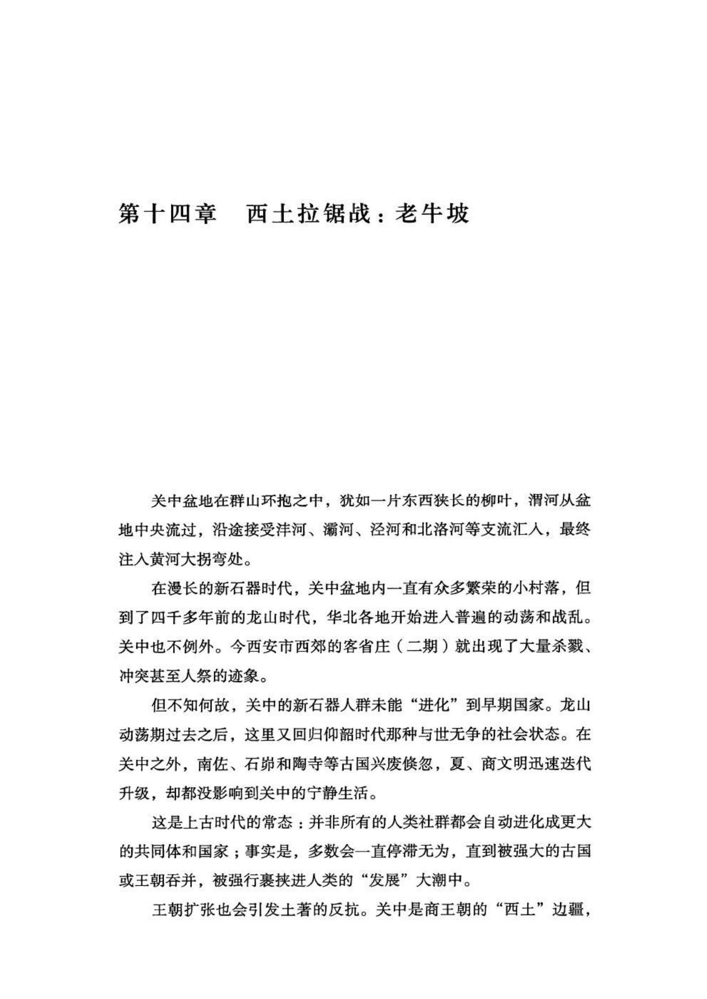
原书阅读器页 284原书物理 PDF 页 282印刷页 270
老牛坡是商朝设在外地侯国的典型个案，显示了商族人祭文化和土著部族文化之间的激烈冲突。
早商的入侵者
20世纪，老牛坡的村民耕作时还偶尔会挖出商代青铜器，这引起了考古工作者的注意。1985—1989年，考古队对这里进行了多次发掘，由此，一个从新石器时代发端、跨越整个商代的聚落逐渐露出部分真容。[[fn:1]]
老牛坡村接近关中盆地中心，背靠骊山，面对满河。在商人到来之前，本地土著还生活在石器时代。他们在黄土坡地上开垦出农田，用石刀和石镰收割谷物，在濯河中用网捕鱼，留下了很多拇指粗的石制渔网坠。他们也做些艺术工作，比如，在陶罐的口沿捏出花边，用石头磨制成巴掌大的环形“石璧”。
土著墓葬的随葬品很少，没有任何兵器，说明他们的生活中少有暴力冲突，也几乎没有权力组织和社会分化。那么，又是什么引来了商人征服者？
墓葬里埋藏着答案：发掘的七座墓中，四座随葬有绿松石。也就是说，附近的山中有铜矿，这正是商人搜寻的目标，而且也只有在能生产铜器的地方，商人才能建立稳固的据点。
可能在刚刚灭亡夏朝一二里头古城之后，新兴的商族人就乘胜进入了关中。他们沿着黄河南岸古道而上，穿越豫西的山涧和密林。这一路虽颇为艰辛，但并不缺少人烟。在仰韶时代，农业聚落已经遍布这里山间的各处台地。
关中盆地虽然开阔，但尚未进入古国时代，并没有值得掳掠的繁荣邑聚，所以这批商人并未把关中视作久留之地。直到开国百年，郑洛地区开始面临人口增长的压力，关中地区这才成为商朝扩张的新大陆，一批又一批商人进入潼关，在盆地东部扩散开，建起一系列大大小小的据点。其中，老牛坡规模最大，延续时间也最长。
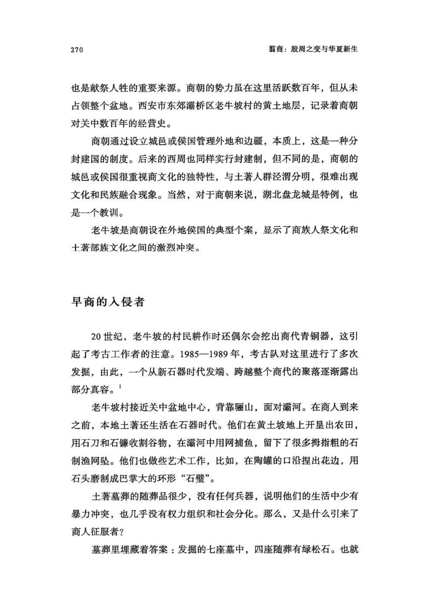
原书阅读器页 285原书物理 PDF 页 283印刷页 271
老牛坡商代地层分为四期。一期还是本地土著的生活世界，到二期，开始出现冶铸青铜的遗迹，并伴随着大量早商式（二里冈文化）陶器碎片。这是商朝人入侵和定居的证据，湖北的盘龙城也在这一时期形成。关中周边的铜矿少而零散，虽难以形成盘龙城那种规模的青铜产业，但已经足够征服者自用。
老牛坡二期的生活-作坊区布满了大大小小的灰坑，考古工作者在里面发现了两块铜炼渣、两枚铜镞和一枚铜锥，还有铸造铜镞和铜戈的陶质残范各一块——是铸造小件铜器用的“双面范”，两块范拼合，可以多次使用。在半块砖头大小的镞范上，五枚箭镞呈扇形分布，其中四枚完整，无倒刺，两翼三角形；戈范刃部平直，锋利。这都是早商时代青铜器的特征。
没有发现任何稍大的铜器和铸铜范，比如商族人常见的铜酒器。由此可见：一，这批征服者地位不太高；二，军事需求最为迫切，必须用有限的铜资源巩固新据点。不过，他们还是仿照铜器的饕餮花纹制造了陶器，试图效仿故乡显贵们的生活。
商人常见的杀人献祭自然不会缺席。一座边长约半米的三角形小坑，里面埋着三枚完整的幼儿头骨，但没有任何躯干骨和肢骨。填土经过夯打，头骨非常破碎，无法分辨性别，只能判断他们的年龄在两岁左右。这些幼儿可能是用来向铸铜设施献祭的，因为人头坑紧挨着一座大灰坑（88XL12H6），从中发现了两块铜炼渣，说明铜炉应该在不远处。
老牛坡商代二期的陶制铸范和铜器（图）
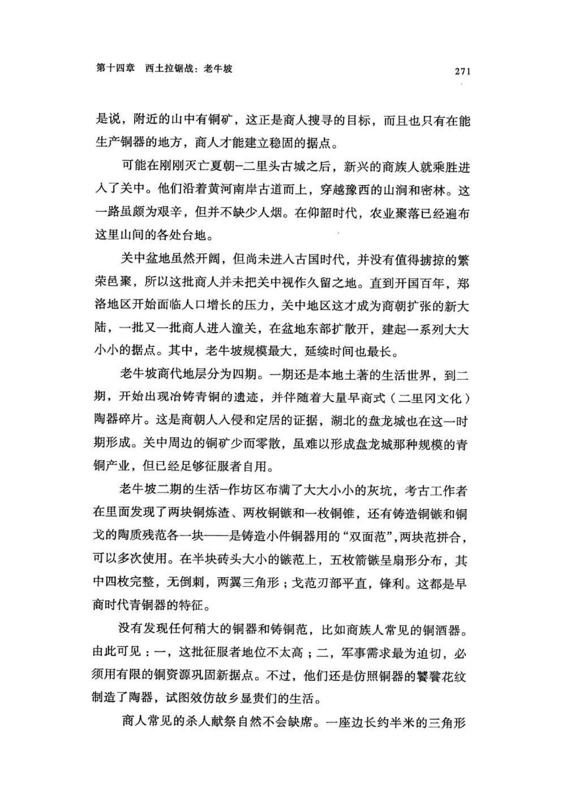
原书阅读器页 286原书物理 PDF 页 284印刷页 272
二期仿铜陶簋，有商代铜器常见的饕餮夔龙纹饰带（图）
在出土了铜镞和铜锥的88XL12H18灰坑，还发现了两片由人头骨磨制成的椭圆形“骨饼”，直径约3.5厘米，比硬币略大，没有穿孔和纹饰，不知有何用处。
由于发掘范围有限，没有发现商人的房屋和墓葬，只有一些灰坑。从这些信息看，在二期，商人征服者数量不多，生活也不算奢华。
综上，老牛坡二期只发现有铸造工具，但没有冶炼铜的迹象，比如大量的铜炼渣。那么，用于冶铸的铜料又来自哪里？
沿浦河向上游20公里，蓝田县的怀珍坊村有这一时期堆积的铜渣、木炭屑以及冶铜炉的残迹。比如，有草拌泥的红烧土块，一面粘有一层绿色凝结铜汁，发掘者推测，这可能是炼铜炉的炉壁碎块。
和同期的老牛坡一样，怀珍坊没有发现大件铜容器（礼器），但出土有早商式陶器，以及一些小件铜器，如铜戈、小铜刀、铜锥、铜钻、铜镞和铜环等。此外，还有一块重三斤的铜圆饼（用于铸造的铜锭）。
也没有发现铸铜设备，比如铸造用的范。看来，这里和老牛坡正好互补，冶炼出的铜锭会被送到老牛坡投入铸造。只是本来可以整合在一起的冶铸工作，为何要分在相隔20公里的两地？
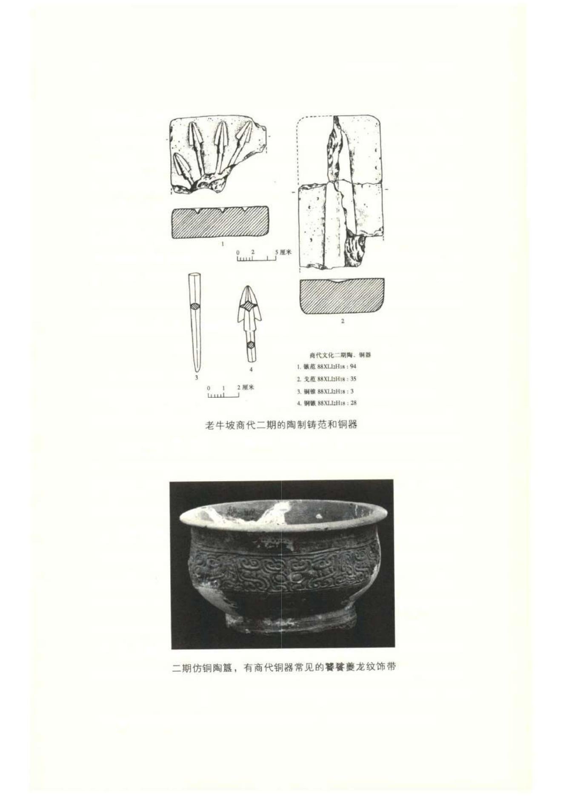
原书阅读器页 287原书物理 PDF 页 285印刷页 273
其一，可能是铜矿石不易运输，且冶炼场地离铜矿越近，则成本越低；其二，这两种工序都有很特殊的条件，冶铜需要有矿石来源，铸铜则还需要铅和锡，以及合金配比技术。两种工序分离背后的原因可能是，这是两个不同的商人部族各自拥有的产业，怀珍坊这家有矿山，老牛坡则有铅和锡以及铸造技术，他们可以分工合作，却不愿合并成一'家。
和冶铜设施同期，怀珍坊遗址还发掘出五座低等级墓葬，尸骨大多残缺，下葬时应该已被砍去肢体。M1墓主缺头骨和右半身骨骼，有右小腿骨。从骨架观察，头骨及右半身骨骼应该在埋葬时就缺了，足骨有明显截断的痕迹。M2墓主是一名儿童，“坑内仅有两根小腿骨，有明显的截痕”。M3墓主的骨架缺上肢骨和肋骨等，发掘报告认为，下葬时尸体就已经不完整了。M4墓主的骨架缺右上肢骨、左股骨及其他小件。[[fn:2]]
这是伴随商人而来的征服和残酷统治，自给自足的土著村落成为商人统治下的奴隶庄园。一方面，开采和运输铜矿石需要较多劳动力，怀珍坊的这些死者可能是被奴役和虐杀的本地劳工。另一方面，这些人仍然拥有比较正规的墓葬，墓穴里有几件简陋的随葬品，说明他们还生活在自己的村落和家庭环境中，死后也由亲人安葬。
怀珍坊的早商文化层很薄，没有更晚的（殷商时期）陶器和铜器，说明这个据点只是昙花一现，然后被永远废弃。
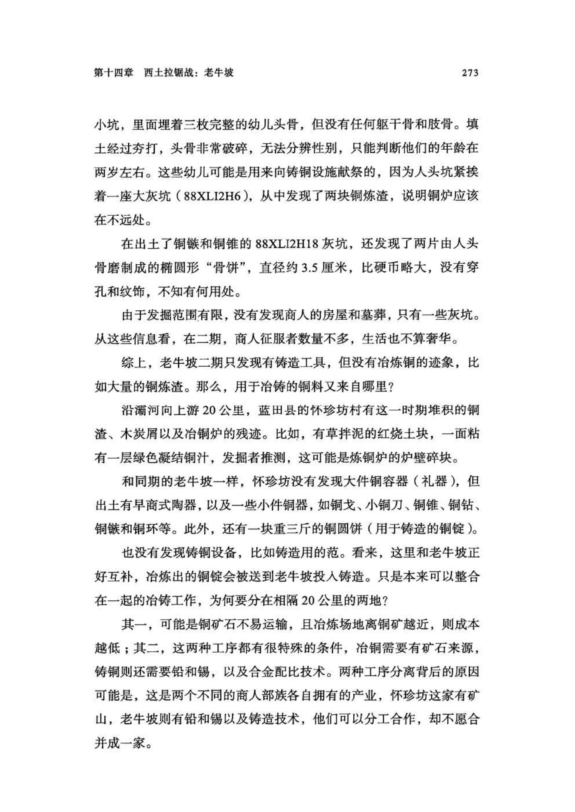
原书阅读器页 288原书物理 PDF 页 286印刷页 274
第二轮西进运动
不止怀珍坊聚落，甚至不止关中，在商朝中叶，商人在各方向的扩张潮都在冻结和收缩。此时，并未出现强有力的外敌，正如前文所述，商人的挫折来自内部的九世之乱，这造成了王朝近百年的停滞。
然后是盘庚王迁殷。之后，殷商终于稳定了下来。经过几十年休养，王朝实力逐渐恢复，到长寿的武丁王在位时期，又开始了对四方的征伐。而且，殷商已经有马拉战车，王宫和上千里外的战线的联络得以解决，征伐已不再是盲人摸象般的自发扩张，而是由商王统一指挥的军事行动。
第二轮“西进运动”是武丁开启的，重点指向晋南和关中盆地。商人入侵者持续向关中西部推进，与各种土著部落频繁发生激战。这是上一轮自发扩张潮从未能抵达的地区。
关中西部有一个叫“周”的羌人部族。有一条甲骨卜辞的内容，就是武丁占卜要不要亲自去征讨周方：“丙辰卜，宾贞，王惟周方征。” （《合集》6657正）此外，武丁还多次占卜需要派哪些武装去“寇周”，寇也释读成“扑”，都有征伐之意。这种卜辞多达九条，预备动用的武装则有“多子族”：“己卯卜，允，贞：令多子族从犬侯寇周，叶王事。”还有犬侯、尹侯、崇侯虎以及一些字形无法释读的侯和人名。[[fn:3]] 可见，武丁动用的兵力非常强大，尤其是“多子族”，它是商王族的武装，陈梦家将其比作清代的八旗军队。
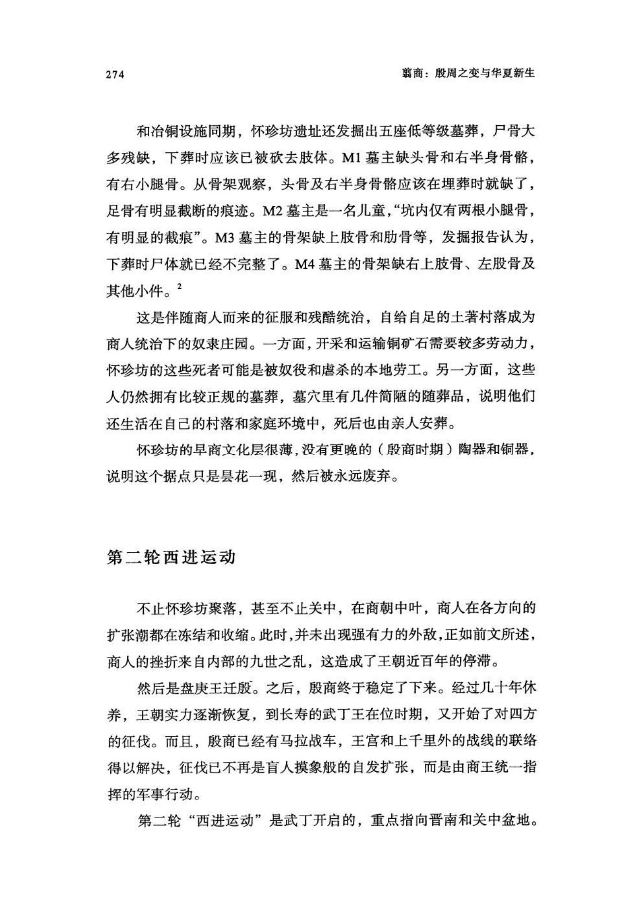
原书阅读器页 289原书物理 PDF 页 287印刷页 275
需要特别强调的是，武丁这里讨伐的羌人周族（姜姓周族），和后来周文王的姬姓周族不一样。[[fn:4]] 武丁王时期，周文王的先祖姬姓周族还生活在偏远的陕北山地，而非关中盆地，商朝还不可能知道他们。当然，羌人周族和姬姓周族还有血缘上的联系，后面我们会对此详细介绍。
商人军队消灭姜姓周族后，占据了岐山之南、渭水之北的周原地区。然后，武丁王册封了一名王族显贵统治周原，在甲骨文里，他被称为“周侯”。注意，这是商人建立的周原侯国。
周原地区出土过几次商代青铜器，[[fn:5]] 有窖藏，也有墓葬。多数铜器造型属于殷墟前期，恰和武丁时期的西进运动吻合，但也有少数铜器时代更早，属于迁殷之前的商前期。这少数的商前期铜器可能是被主人从商朝核心区带到新征服的周原的，保存和使用了好几代，最后被随葬埋入地下。
这些铜器表明，占领周原后，商朝便试图在此建立稳定的据点和扩张基地。显然，新册封的这位周侯和王室关系密切，武丁时期的卜辞里有很多关于他的内容，比如，“令周侯今生月亡祸”（《合集》20074），意思是，武丁祈祷周侯这个月没有灾祸。
再到几代人之后，商朝授予周文王的封号则是“周方伯”。[[fn:6]] 伯是异族酋长，商朝是不会给异族头领“侯”的称号的。
武丁曾占卜一位“妇周”的病情会不会延续。[[fn:7]] “妇某”的称呼专用于商族血统的后妃，比如著名的妇好。倘若是异族女子，哪怕成为商王宠妃，也不会享有这种称呼，比如末代商纣王宠爱的妲己，她来自“己”姓的苏国，而非“子”姓的商族，所以不能称“妇妲”。
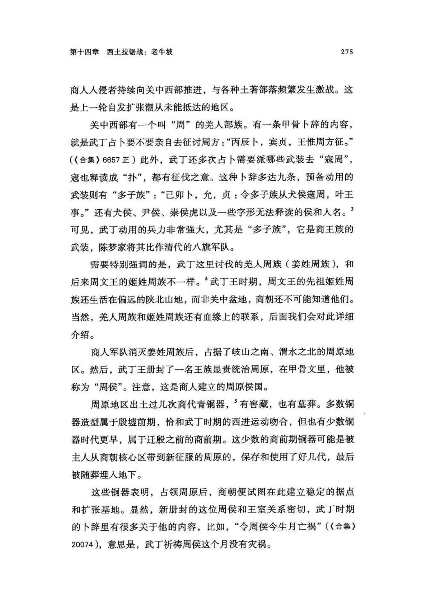
原书阅读器页 290原书物理 PDF 页 288印刷页 276
武丁死后，西进运动再次式微。结果，西部土著羌人和商人的冲突日益频繁，关中西部的商人据点还没来得及稳固就纷纷沦陷。在周原，虽然发现过多组武丁时期的青铜礼器，但没有发现任何高等级建筑。这说明，这个商人侯国可能立国不久就被消灭，或者被迫离开了。
1972年，在周原范围内的岐山县京当村出土了五件有“目”形纹饰的商式铜器。它们被保存在一个“用圆石头砌成的窖穴”中，村民挖掘时没有发现人骨，说明这批铜器不是随葬品，而是战乱来临时埋藏的，很可能是主人发现自己遭到羌人围困，来不及带走财宝，只好在突围之前先埋了起来。
商人对待异族过于残忍，俘获的羌人被一批批送到殷都献祭，故而许多羌人宁愿战死或逃亡，也不愿在商人的统治下苟活。所以，仅靠武力，商人一直难以统治整个关中盆地。
更复杂的是，动荡甚至形成了一种虹吸效应，更遥远的西北方土著部族，正在缓慢而持续地翻过陇山和六盘山朝关中迁徙。他们可能是被商人新奇的青铜产品吸引，同时试图占据因战争而荒芜的土地。比如，以“分裆袋足”陶鬲为特征的刘家文化，有学者认为，它是从西北方进入关中的，属于甲骨文中的羌人群体。[[fn:8]]
武丁死后，他的儿子祖庚和祖甲相继为王。《史记•殷本纪》记载，祖甲“淫乱，殷复衰”，周侯之国遂被废弃。自此，商人势力撤出关中西部，这里彻底萧条，连青铜器也很少被发现。但商人还是固守住了关中东部的老牛坡，在这里，武丁王新册封了一位商人贵族，他就是《史记》和《封神演义》里鼎鼎大名的崇侯虎。
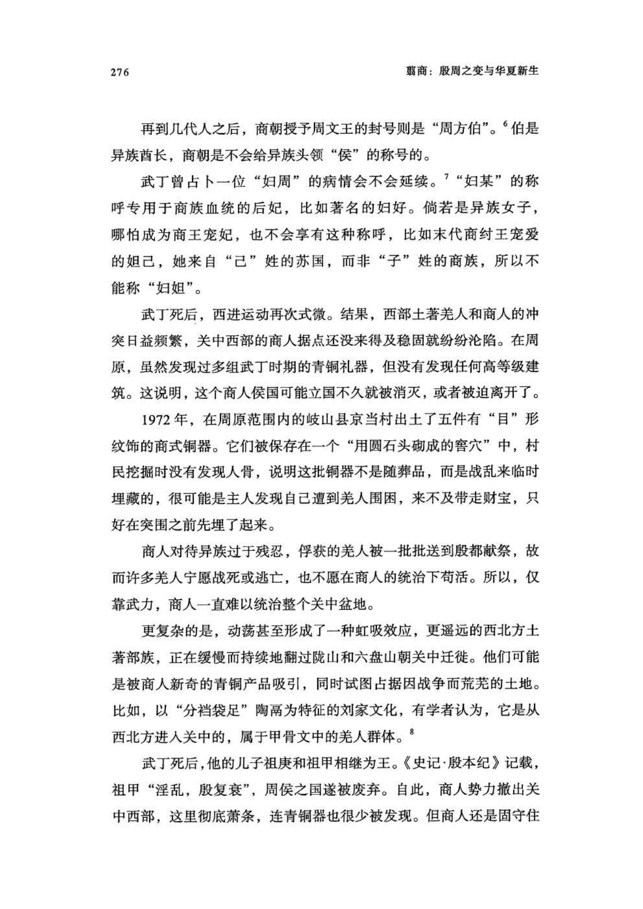
原书阅读器页 291原书物理 PDF 页 289印刷页 277
崇侯虎早生了二百年
据《史记•周本纪》，文王周昌被商纣王囚禁羑里的起因是：
崇侯虎谮（诬告）西伯于殷曰：“西伯积善累德，诸侯皆向之，将不利于帝。” 帝纣乃囚西伯羑里。
〔按语：西伯利亚〕
从此，周昌经历了一系列遭遇和幸运。获释后，他开始积蓄力量，密谋翦商，并在其去世前一年，穷周族之全力向崇国发动进攻，终于攻灭了这个仇敌之国。
《诗经•大雅•皇矣》对崇国的灭亡有生动描写。“帝谓文王：询尔仇方，同尔兄弟；以尔钩援，与尔临冲，以伐崇墉！”翻译成白话就是，上帝命令文王：“召集你的同盟，集合你的族人，带上你攻城的钩梯和冲车，去攻打崇国的城墙”。
那么，让文王如此咬牙切齿，以至动用上帝来诅咒的崇国，究竟在哪里？对此，史书却语焉不详。
其实，在比周文王早二百年的商王武丁时代，甲骨卜辞中就已经出现了崇侯虎。（《合集》6554）
1 .贞：令从崇侯虎伐髳方，受有佑。
2 .贞：勿从崇侯。[[fn:9]]
武丁让崇国伐髳方，说明它们之间比较近。后来，周武王灭商,
《合集》6554【图】：1.贞：令从崇侯虎伐髳方，受有佑。2.贞：勿从崇侯。
盟军之中也有“髳”（《尚书•牧誓》）可见，周原和髳方距离不远。据此推测，崇国和周原之间也不会太远。
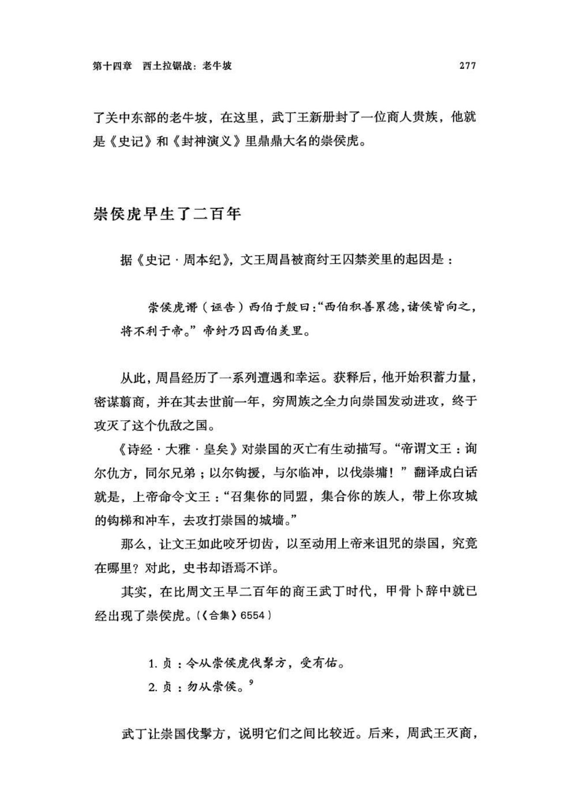
原书阅读器页 292原书物理 PDF 页 290印刷页 278
从甲骨文字形看，崇字中间是一张树立的床，上下各有一个类似方括号的符号，“床”可能是音旁，和“崇”发音接近。在卜辞中，这个崇字经常被写得非常瘦高，超过正常的两个字的高度，可能用来表示它有“高”的含义。从音和意来看，它都很接近“崇”字。
崇侯虎为何会出现在文王之前二百年？很可能是因为，作为崇国的开国之君，他在武丁王时期就非常活跃且显赫。胡厚宣先生就总结说，武丁时有捍卫商王朝的鼎足三大将，崇侯虎就在其中。这可能导致名人效应，使得后人在讲述文王经历时，把晚近的“崇侯”误记成了“崇侯虎”。
此外，开国之君的名字也可能成为后世历代国君的代称。比如，西周建立后，周文王的两位弟弟虢仲和虢叔的后人的封国皆名为虢，这两国后世的国君便也继续分别被称为虢仲和虢叔。按这种逻辑，崇国历代国君也都可以被称为崇侯虎。
至于崇国在何地，老牛坡遗址提供了答案。
《诗经》和《史记》有记载，攻灭崇国之后，文王立刻把驻地从周原迁到了丰地：“文王受命，有此武功。既伐于崇，作邑于丰。”[[fn:10]] 古代已有学者猜测，崇国应该离丰地不远：”崇国盖在丰镐之间。”（《史记正义・周本纪》）丰地，在今西安市西郊，而老牛坡在东郊，两地相距仅约50公里。所以，发掘报告推测，老牛坡可能就是崇国都城：
若老牛坡遗址所在地果为崇国都邑旧址，则丰、镐一带地属崇国势力范围或政治辖区，是完全可能的。[[fn:11]]
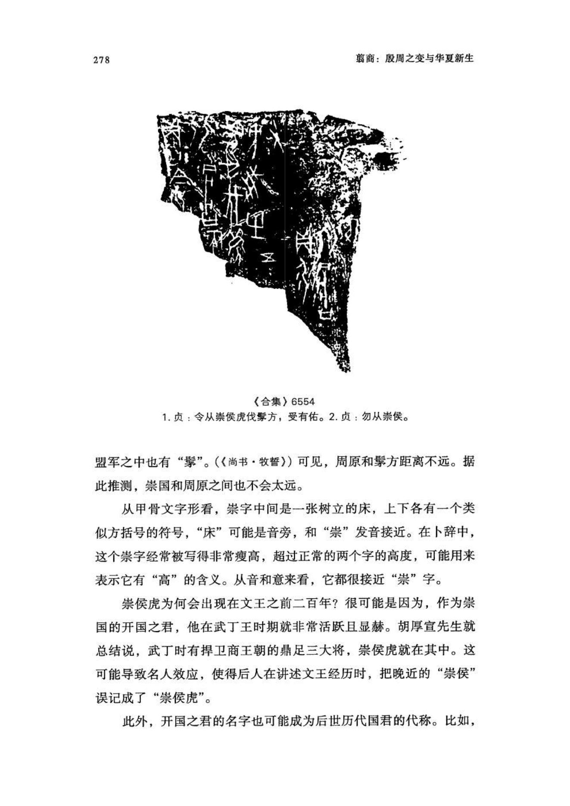
原书阅读器页 293原书物理 PDF 页 291印刷页 279
考古发掘显示，在老牛坡三期（相当于殷墟前半期，武丁王的西部扩张开启之时），一批身份更高的商人来到这里定居，兴建起高等级建筑，老牛坡因此从普通据点扩大为城邑和侯国。这可能是崇侯虎建国的开端。
商朝需要在关中建立稳定的前进基地，而老牛坡位居关中盆地中心，有铜矿资源，还有商人征服者上百年的经营史，各方面条件都最合适。
崇国食人者
大约在武丁时代，老牛坡出现了两座大型建筑。
一号基址东西长30米，南北宽15米多，夯土地基厚1米，上面曾有多座分体建筑。能识别出三座建筑痕迹，其中的F3相对完整，长11米多，宽近6米，是“一座面阔四间、进深二间、面东二门、前有走廊、屋顶为两面坡式的中型房屋建筑”。它很可能是崇侯虎家族成员的住宅。
一号基址F3房基发掘绘图（图）
二号基址发掘绘图（图）
二号基址与一号相距100米，被雨水冲毁了一部分，南北长23米，东西宽12米，夯土地基厚1.3米，复原出的柱子，有南北五排，东西八行，是一座大型单体殿堂建筑。这里可能是崇侯办公理事的朝堂。
为保护房屋遗迹，考古队没有发掘夯土地基，所以无法确定是否有人奠基。但在发掘之前，村民曾在这里修建一座砖窑，留下的土崖断面上恰好有“小儿骨架一具”，被压在室内地面之下。如此偶然的机会都能发现尸骨，看来用人奠基的数量应当不少。
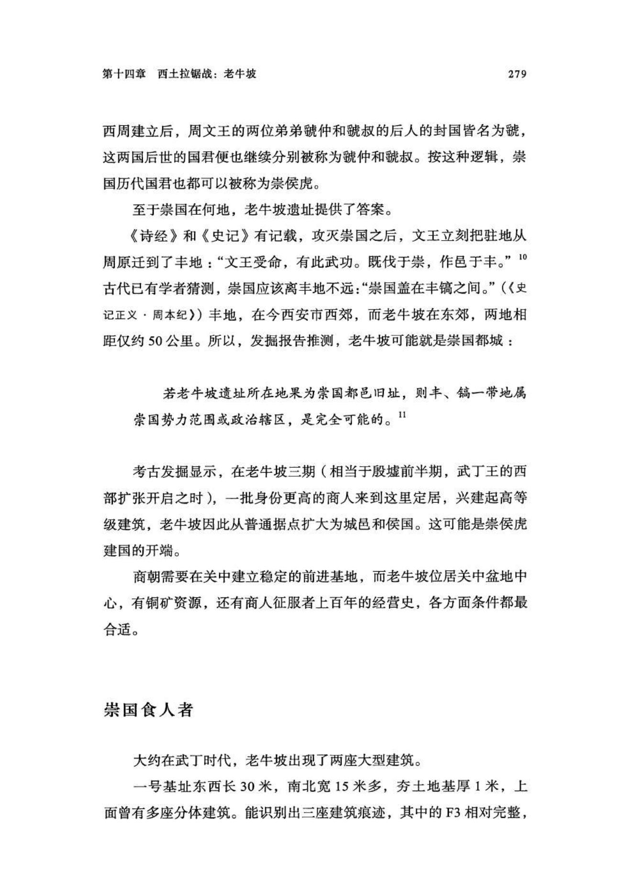
原书阅读器页 294原书物理 PDF 页 292印刷页 280
在夯土台基宫殿区的东侧，是土著农夫的房屋，还延续着制造花边陶罐和石璧等传统。武丁大扩张时期，因到老牛坡定居的商人越来越多，一些农夫遂被驱逐，供新来的商族人营建新居。而土著们的房屋，则正好用来做垃圾坑。这是黄土地带特有的“地窖”式房屋：地上挖一出近圆形坑（直径3—5米，深1.5—2.5米），坑口搭草棚遮挡风雨，坑壁上挖出供上下出入的阶梯。
从关中到伊洛和晋南是黄土分布带，而黄土有较好的垂直层理，不容易倒塌，适合挖掘地窖，而且保温性好，比较宜居。这种地窖式房屋使用了上千年，从仰韶文化晚期直到商周。
但自商人大量来到老牛坡后，这种地窖灰坑就不仅埋有陶片等生活垃圾，更还有人骨。比如：
H5底部有人骨架两具，人骨很不完整，且和猪、狗的骨骼混杂在一起。发掘报告推测，“显然是死者被砍杀后而随意扔入的”。
H19底部有人骨架一具，“除头骨外，骨骼亦残缺不全，显系非正常的死亡现象……同时还发现有鹿角、碎骨、大小不等的河卵石、已经成堆的烧土灰烬”。
H17底部”紧靠坑壁发现一个完整的人头骨，近头骨处有大量草木灰，在草木灰烬中还有烧过的动物骨骼、鹿角和红烧土块”。
H19平面及剖面图（图）
H8平面及剖面图（图）
上述三座灰坑，人骨都在底部，显然是垃圾坑刚使用时扔进去的。坑内有大量家畜骨头和人骨混在一起，还有灰烬和烧土块。所以，它们也可能是祭祀坑，但发掘报告中的信息较少，难以确证。
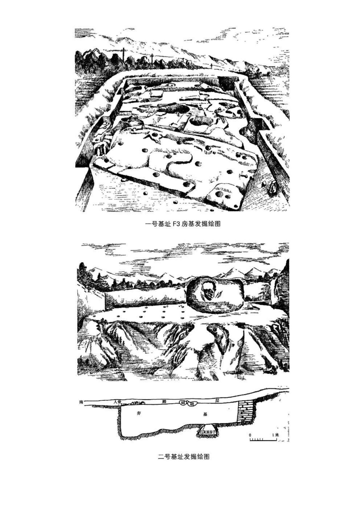
原书阅读器页 295原书物理 PDF 页 293印刷页 281
H8更特殊，是一座连体大灰坑。它不是窖穴改建的，而是先挖了一座专用垃圾坑乙（长2.6米，宽2.3米，深1.1米），当快被填满时，又紧挨着它挖了一座更大更深的垃圾坑甲（长3.7米，宽2.9米，最深处有2.4米），最后，甲坑也被填满。
甲乙两坑内埋有各种生活垃圾，还有“许多人骨和牛、狗、猪等动物骨骼混杂在一起”。和其他灰坑不同的是：一，这两座灰坑不止底层有人骨，而是各层都有，说明杀人行为伴随着垃圾坑的使用全程；二，人骨都是零碎的，且和其他家畜骨骼混杂在一起，应该是吃完以后被遗弃的特征。或许H8周边的人家有吃人肉的习惯，而且持续了很多年，否则难以形成这种遍布垃圾坑的人骨堆积。
但另一方面，往H8里倾倒垃圾的，应该不仅有贵族肉食者，还有本地土著居民，因为坑中还出土有石刀、石镰、石凿以及本地传统的花边口沿陶罐。
这个居住区共发掘三期灰坑19座，有人骨的只有上述四座，并不占多数。这说明商人统治者的杀人行为还是有所区别，嗜杀和吃人肉的应该只属于少数人，或者特定场合。
崇侯的青铜产业
建立崇国，是商朝向西扩张的保障，由此，武丁先后灭亡羌人周族和分封商人周国。但武丁去世后，周原的商人侯国未能保住。在武丁王的儿子祖庚或祖甲时期，一片关于“周”的甲骨卜辞中又出现了“崇侯”等人。[[fn:12]]
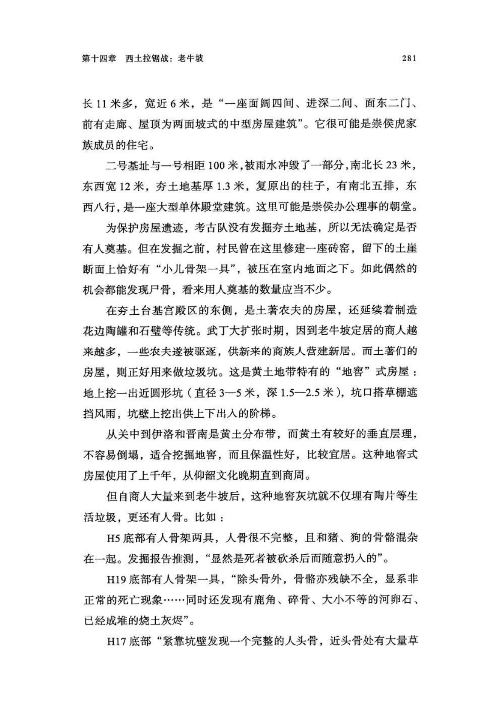
原书阅读器页 296原书物理 PDF 页 294印刷页 282
甲骨磨损过于严重，难以判断商王到底让他们做什么。从时间看，祖庚和祖甲时期，商朝势力衰退，商人的周侯正遭受土著的威胁，为此，商朝很可能要调动周边诸侯救援。但此举无效，土著势力又淹没了关中西部。
商人的周国灭亡后，老牛坡对于商朝的重要性得到了进一步提升，功能布局也随之发生了变化：殷墟前期的大型夯土建筑被废弃，改建为冶炼铸造区；崇侯的新宫殿区可能移到了遗址西北侧，也就是考古划出的第四发掘区。目前，这个区的发掘还比较少。
到殷墟末期（老牛坡四期），崇国更加繁荣，青铜产业的规模也更大了：有很多冶铜的炼渣堆积，填满了一条至少长18米，最深处可达2米的土沟。距离铜矿渣不远的山坡上，有四期铸铜作坊的垃圾堆积，里面埋有很多熔铜陶缸碎片和残陶范。
与二期那种铸造小件铜器以及可以多次使用的双面陶范不同，四期的陶范多用来铸造相对较大的器物，且只能一次性使用。目前发现的铸范可以制造各种容器和兵器，如鬲、戈、钺、皮角上缀的圆铜泡，还有类似面具的所谓牛面和人面形饰，但尺寸略小，不适合戴在脸上，可能是系在皮质头盔的额顶部位，起威吓敌军之用。[[fn:13]]
从老牛坡二期的冶铸设施分离、规模很小，到四期的冶铸一体、规模增大，意味着权力结构已经发生重组：原来分散且互不统属的商人据点，以及基于自然资源和商业交换的产业布局，被整合到更大的政权体系中，形成了方国政治体。
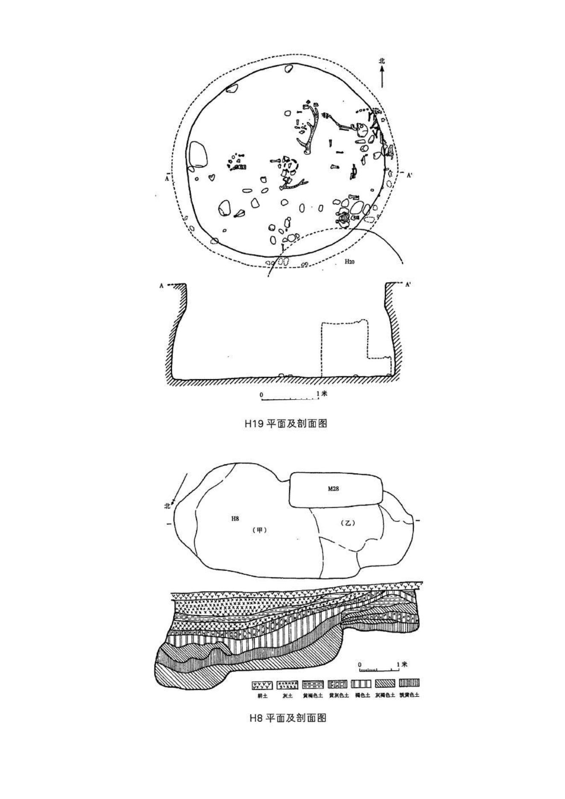
原书阅读器页 297原书物理 PDF 页 295印刷页 283
怀珍坊相对偏僻、封闭，而老牛坡更接近关中盆地中心，控扼渭河南岸的交通干道。因此，把铜的冶铸设施集中到老牛坡，更便于军事防御，避免被对手分割击破。虽然铜矿石的运输里程要多20公里，但冶铜和铸铜两道工序却可以无缝衔接，免去了再次熔化铜锭的成本。
虽然尚未发现殷商晚期的宫殿区，但从铸铜业的兴盛程度看，这一时期肯定有更大的核心建筑群，甚至还可能有夯土城墙。后来的周人史诗说，攻打崇国时，他们面对的就是牢固的城墙，正所谓“崇墉仡仡”。[[fn:14]]
崇国商人的墓葬还使用大量殉人，等级稍高的殉人数量更是要十人左右，比多数商人侯国和据点都要“奢侈”。只是在商朝末期周文王灭崇国后，这些墓葬被严重破坏，相关细节我们会在后文商周易代的部分介绍。
崇国-老牛坡后期的安定繁荣，和商人招降了一支北方山地部族有关，这便是周文王祖父一代的姬姓周族。他们被安置在土著和商朝反复拉锯的周原地区，而改变上古华夏文明历程的大转折，也自此开启。
注释
1刘士莪：《老牛坡》，陕西人民出版社，2001年。以下有关老牛坡考古的基本信息及图片未注明出处的，皆出自该书，不再详注。
2西安半坡博物馆、蓝田县文化馆：《陕西蓝田怀珍坊商代遗址试掘简报》，《考古与文物》1981年第3期。
3《合集》6812正，以及《合集》6813、6814、6815、6816、6817、6821、6822。
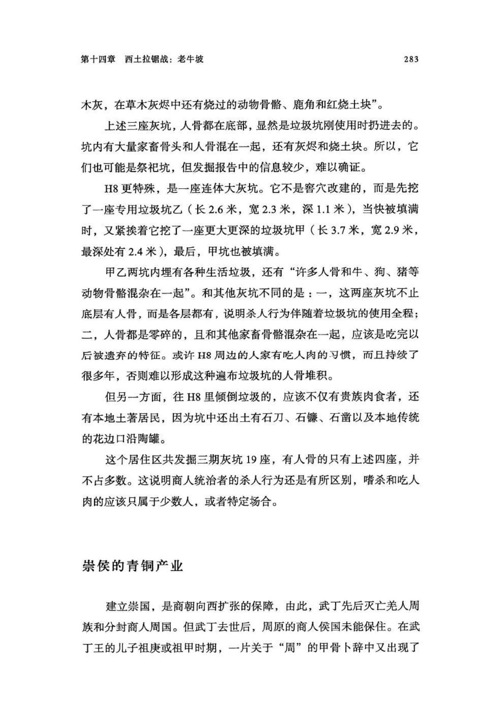
原书阅读器页 298原书物理 PDF 页 296印刷页 284
4徐中舒先生认为这里的周方是姜姓所建的女国，即母系社会的姜嫄国。参见徐中舒《周原甲骨初论》，载《徐中舒历史论文选辑》（下册），中华书局，1998年，第1423页。另可参见俞绍宏等《甲骨文“周”笺识》，《大连大学学报》2015年第1期。另外，董珊先生认为，周原这个地域在不同的时代有不同姓的族群进入并建立国家政权，这些先后成立的国家可以使用同一国名“周二并用此国名来命名自己的国族。参见董珊《试论殷墟卜辞之“周”为金文中的妘姓之琱（雕）》，《中国国家博物馆馆刊》2013年第7期。
5王光永：《陕西省岐山县发现商代铜器》，《文物》1977年第12期；罗西章：《扶风美阳发现商周铜器》，《文物》1978年第10期；齐浩、张天宇：《周原遗址新见京当型铜器墓浅识》，《中国国家博物馆馆刊》2015年第11期。
6周原甲骨H11：84有“册周方伯”。
7《合集》2816。《乙》8894 : “贞：妇周。”
8尹盛平：《周文化考古研究论集》，文物出版社，2012年，第H页。
9古文字学家对该字有不同的释读，有人释读为“蒙”字，但胡厚宣认为是“崇侯虎”，见胡厚宣《卜辞中所见之殷代农业》，《甲骨学商史论丛二集》上，台北大通书局，1972年影印本上册，第52页。韩江苏、江林昌：《〈殷本纪〉 订补与商史人物徵》，第478页。
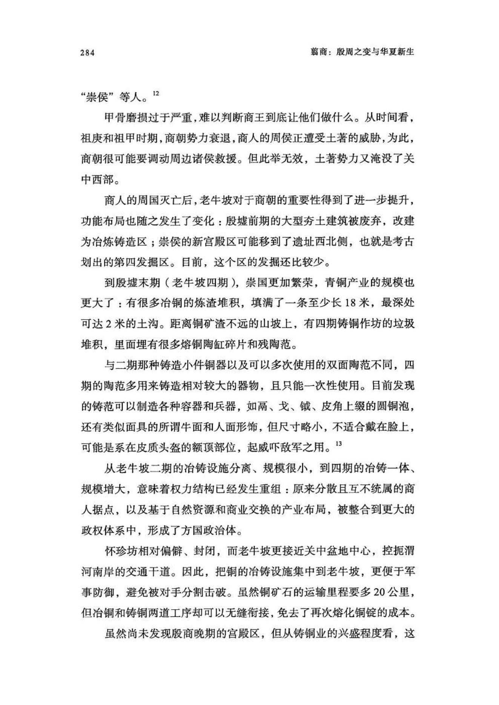
原书阅读器页 299原书物理 PDF 页 297印刷页 285
10《诗经•大雅•文王有声》。《史记•周本纪》：“明年，伐崇侯虎。而作丰邑，自岐下而徙都丰。”
11《老牛坡》，第359页。
12《合集》23560的这片甲骨图片模糊，多数字难以辨认，此释文来自胡厚宣《甲骨文合集释文》。
13汉中地区发现的这类面饰更多，属于当地土著发展起来的青铜文化。
14《诗经•大雅・皇矣》：“以尔钩援，与尔临冲，以伐崇墉。临冲闲闲，崇墉言言。执讯连连，攸就安安o是类是襦，是致是附，四方以无侮。临冲菟萌，崇墉仡仡”。
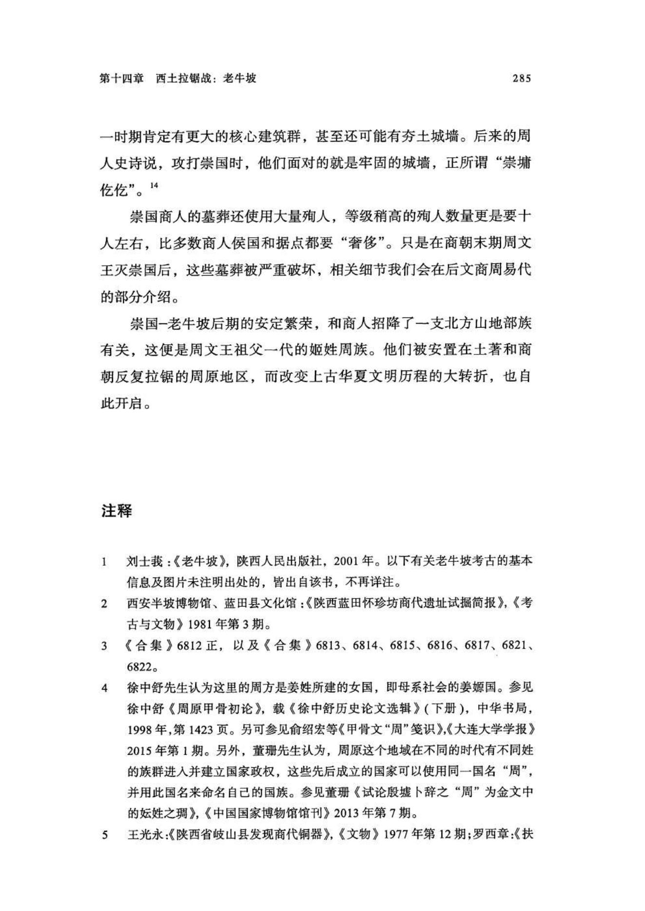
原书阅读器页 300原书物理 PDF 页 298印刷页 286
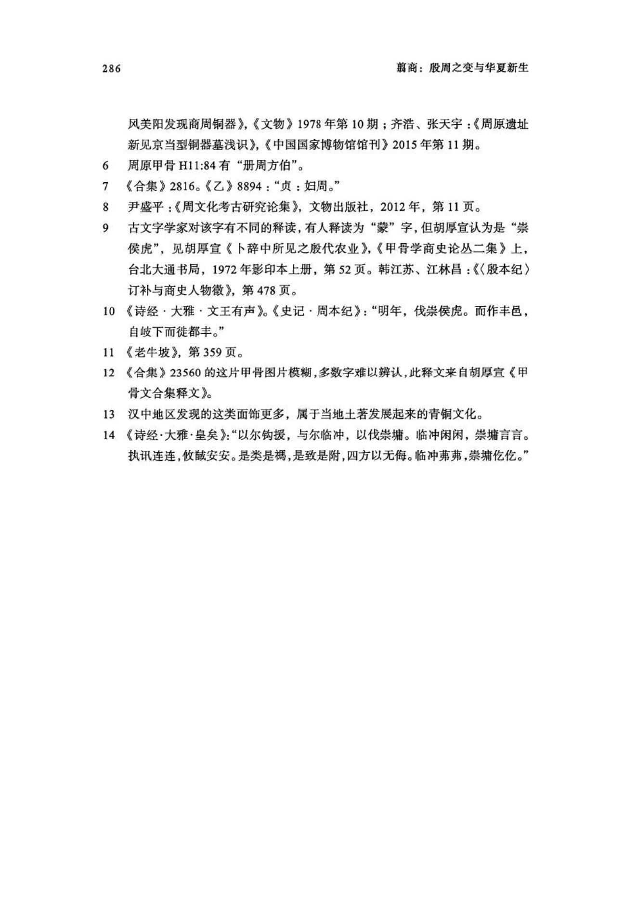
编辑札记
标记
先在正文中选择文字，再输入拼音；可用“拼音；简注”。